LECTURE 17 · 并发
并发 Bugs
和应对
从死锁到原子性与顺序违反，系统梳理并发 Bugs 与应对方法。
本讲目录 13 节
导语：人类是顺序的生物
并发编程真正困难的地方，不只在于语法，而在于我们理解世界的方式：
- 人生活在物理世界，只能直接观察自己的局部视角；
- 编程语言最初教给我们的也是顺序执行；
- 函数调用天然带有“交给它，最终会完整返回”的直觉；
- 于是我们很容易把并发程序误当成多个顺序程序简单拼接。
但并发执行的状态空间是指数级的。理解一个并发程序的全部行为，可能等价于枚举数量庞大的线程交错。
这一讲采用“从错误中学习”的方法，系统归纳真实世界中的并发 bug：
- 死锁；
- 数据竞争；
- 原子性违反；
- 顺序违反；
- 检查时刻与使用时刻不一致；
- 并发释放后使用；
- 投机执行引发的新型安全问题。
flowchart TD
A["顺序执行直觉"] --> B["并发交错"]
B --> C["死锁"]
B --> D["数据竞争"]
B --> E["原子性违反"]
B --> F["顺序违反"]
F --> G["真实系统灾难"]
C --> H["工具与工程约束"]
D --> H
E --> H
G --> H
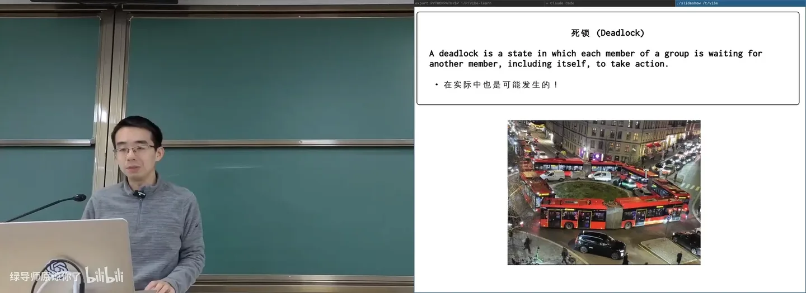
📷 从线程、互斥、条件变量到信号量的并发机制回顾
回到原视频 (00:03:00)
1. 死锁：互相等待
1.1 定义
死锁是：
一组执行者中的每一个都在等待另一个成员采取行动，甚至可能等待自己。
现实世界也可能发生：
- 车辆首尾相连围成环，所有车都无法前进；
- 两个人分别要求对方先让路；
- 线程 A 等待线程 B，B 又等待 A。
flowchart LR
A["线程 A"] -->|"等待资源 1"| B["线程 B"]
B -->|"等待资源 2"| C["线程 C"]
C -->|"等待资源 3"| A
1.2 AA 型死锁
同一线程对不可重入 mutex 连续上锁两次：
mutex_lock(&A);
mutex_lock(&A); /* 永久阻塞 */
sum++;
mutex_unlock(&A);
mutex_unlock(&A);
POSIX mutex 默认不是递归锁：
lock(A)
lock(A) /* 等待自己释放 A */
sequenceDiagram
participant T as Thread
participant L as Mutex A
T->>L: lock
L-->>T: acquired
T->>L: lock again
Note over T,L: T 等待自己释放 A
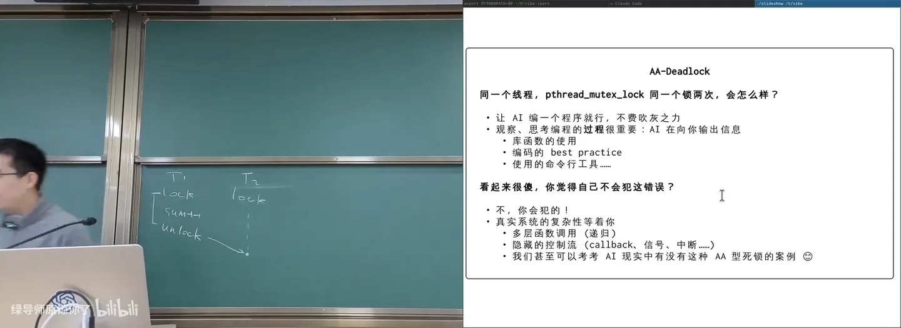
📷 同一线程重复加锁形成 AA 死锁
回到原视频 (00:04:30)
1.3 AA 死锁为什么在真实系统里很常见
看似简单的错误，在大型系统中可能通过以下方式发生：
- 多层函数调用；
- 递归；
- callback；
- 信号处理；
- 中断处理；
- 异步事件；
- 某个函数被复用时带上隐藏的锁假设。
例如：
void cb(void) {
lock(&A);
/* callback 中调用了另一个同样 lock(A) 的函数 */
}
flowchart TD
A["函数 f 持有 A"] --> B["调用函数 g"]
B --> C["callback 调用函数 h"]
C --> D["h 再次 lock(A)"]
D --> E["AA 死锁"]
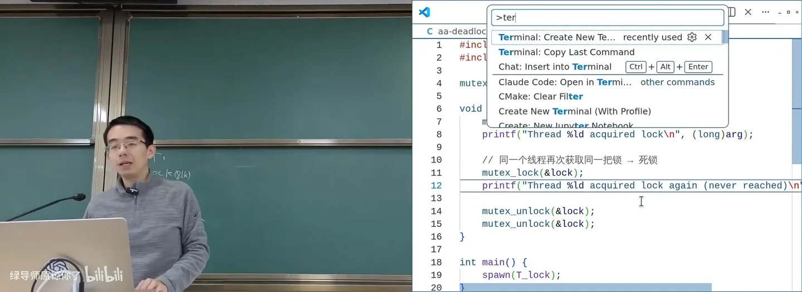
📷 通过引用和回调传播的重复加锁
回到原视频 (00:06:10)
1.4 ABBA 死锁
线程 1：
lock(A);
lock(B);
线程 2：
lock(B);
lock(A);
若两个线程各拿到第一把锁，就形成循环等待：
T1 持有 A，等待 B
T2 持有 B，等待 A
sequenceDiagram
participant T1
participant A as Lock A
participant B as Lock B
participant T2
T1->>A: lock
T2->>B: lock
T1->>B: lock (wait)
T2->>A: lock (wait)
Note over T1,T2: 永久循环等待
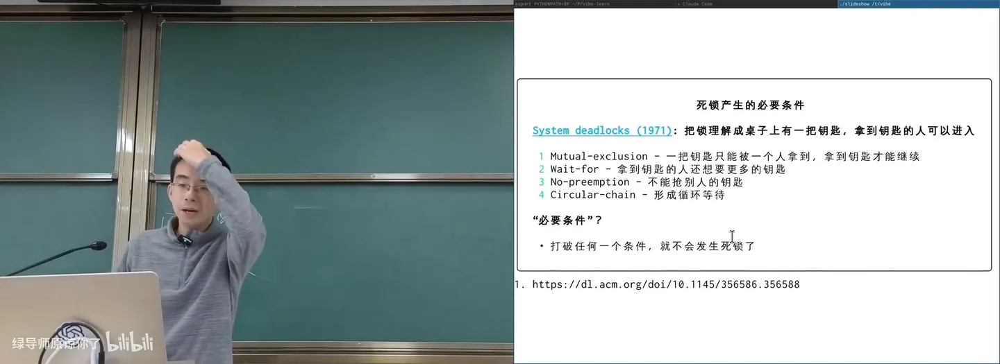
📷 ABBA 锁顺序形成循环等待
回到原视频 (00:10:20)
1.5 死锁较容易观察
死锁的症状通常很明显：
- 程序原应持续输出，却突然完全静止；
- GDB 可以附加并查看所有阻塞线程；
- 每个线程的调用栈都停在某个锁等待位置；
- 不退出、不消费 CPU、也不完成工作。
flowchart TD
A["程序持续输出"] --> B["突然所有日志停止"]
B --> C["附加 GDB"]
C --> D["查看线程调用栈"]
D --> E["所有线程等待锁"]
E --> F["确认死锁"]
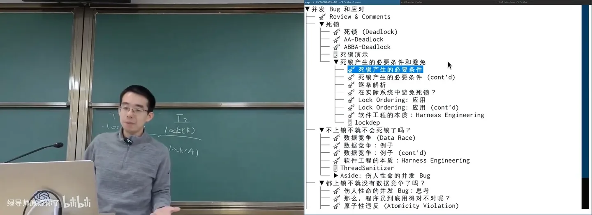
📷 通过日志停止和 GDB 调用栈识别死锁
回到原视频 (00:12:30)
2. 死锁的四个必要条件
2.1 1971 年的经典分析
经典论文 System Deadlocks 把锁建模成桌上的钥匙。
死锁的四个必要条件：
- Mutual Exclusion：一把钥匙同时只能被一个执行者持有；
- Wait-For：持钥匙的人还想要更多钥匙；
- No Preemption：不能强行夺走别人手中的钥匙；
- Circular Chain：形成循环等待。
flowchart TD
A["Mutual Exclusion"] --> D["Deadlock"]
B["Wait-For"] --> D
C["No Preemption"] --> D
E["Circular Chain"] --> D
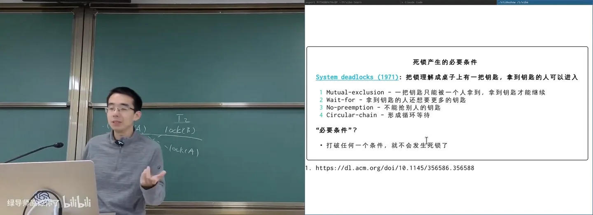
📷 死锁四必要条件：互斥、等待、不可抢占、循环等待
回到原视频 (00:13:20)
2.2 打破互斥
打破互斥意味着不再使用“一把钥匙只给一个线程”的锁模型。
替代方案：
send/receive消息；- waiter / scheduler；
- actor 或 master-worker；
- 把共享资源集中到单一管理者。
但这需要架构级重构，因为锁语义本身就是互斥。
flowchart LR
A["共享锁模型"] --> B["send / receive"]
B --> C["集中式 waiter"]
C --> D["不再由所有线程直接竞争锁"]
D --> E["避免循环持锁"]
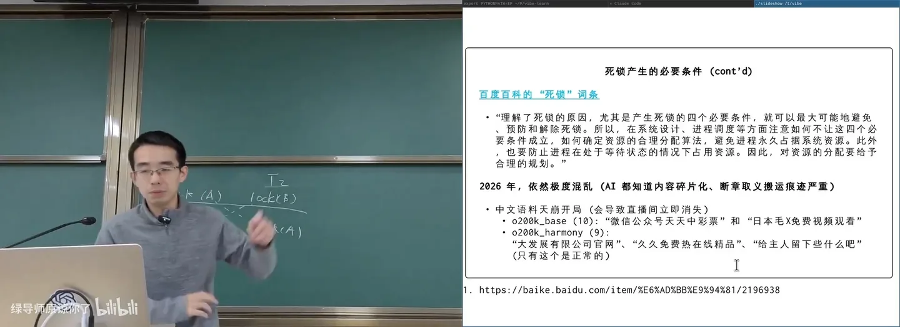
📷 打破互斥需要改为消息或集中式资源管理
回到原视频 (00:18:30)
2.3 打破 Wait-For
常见方案是“一把大锁保平安”：
- 线程最多只持有一把全局锁；
- 不再持有锁后申请另一把锁；
- 因此不会形成多锁依赖环。
代价是并发度大幅下降。
更理想的方案是硬件事务内存：
atomic {
check condition;
modify multiple objects;
}
但系统调用无法轻易回滚，事务内存实现极其困难。
flowchart TD
A["一把大锁"] --> B["没有多锁依赖"]
B --> C["不会 ABBA 死锁"]
C --> D["并发性能下降"]
E["Transactional Memory"] --> F["原子提交或全部回滚"]
F --> G["实现难度极高"]
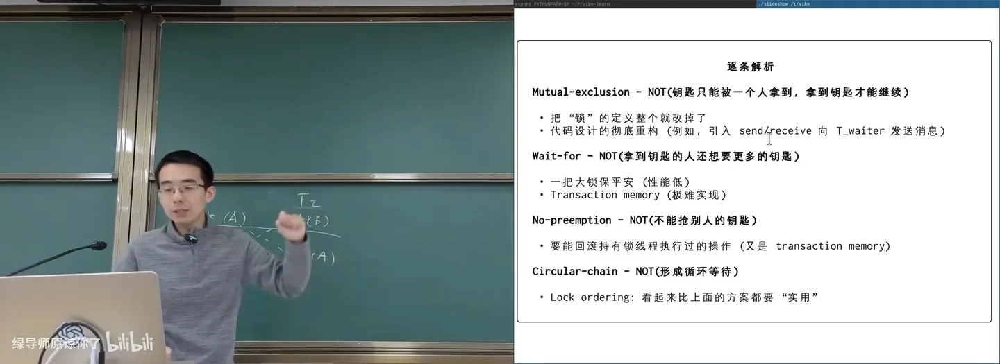
📷 一把大锁与事务内存是两种极端方向
回到原视频 (00:21:00)
2.4 打破 No Preemption
若要抢占别人已持有的锁，必须能回滚该线程已经产生的副作用：
- 已修改的内存；
- 已写入的文件；
- 已发送的消息；
- 已执行的外部系统调用。
这又回到事务内存问题，且外部副作用往往不可逆。
flowchart TD
A["从线程手中抢锁"] --> B["线程已有部分执行结果"]
B --> C{"这些副作用可回滚？"}
C -- "内存修改" --> D["事务内存可处理"]
C -- "I/O / 系统调用 / 网络" --> E["通常无法撤销"]
2.5 打破循环等待：Lock Ordering
最实用的方案是给所有锁编号：
任意线程只能按锁编号从小到大获取锁。
证明思路：
- 任意时刻至少有一个线程持有当前最大编号的锁；
- 该线程之后只会申请更大编号的锁；
- 但已经没有更大的锁被其他线程持有；
- 因此它总能继续并最终释放锁；
- 系统不会所有线程都相互等待。
flowchart LR
A["Lock 1"] --> B["Lock 2"]
B --> C["Lock 3"]
C --> D["Lock 4"]
D --> E["Lock 5"]
F["所有线程只能从左到右"] --> G["无法形成反向循环"]
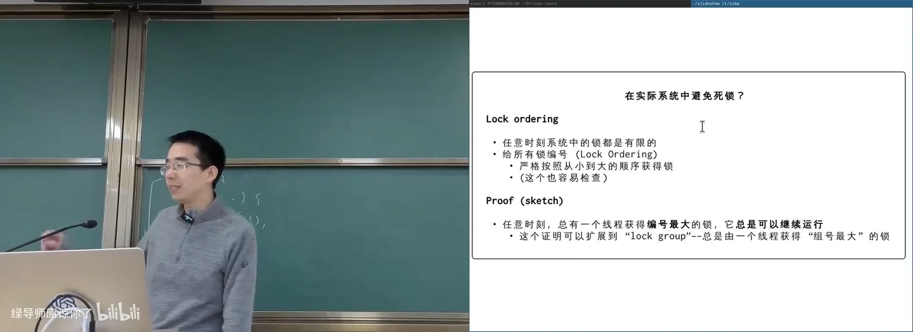
📷 Lock Ordering 通过全序避免循环等待
回到原视频 (00:24:30)
2.6 Lock Group
如果一组锁必须一起获取，可以把整组视为更大粒度的锁：
group 1 → group 2 → group 3
组内可以获得多次锁，但组与组之间仍按编号顺序。
flowchart TD
A["Group 1"] --> B["Group 2"]
B --> C["Group 3"]
D["进入 Group 2 前必须释放 Group 1"] --> E["跨组全序"]
3. Lock Ordering 的工程现实
3.1 Linux 内核锁顺序文档
Linux 内核在复杂子系统，例如内存管理中，会明确写出锁的获取顺序。
lock A
→ lock B
→ lock C
违反顺序通常意味着潜在死锁。
flowchart TD
A["子系统设计"] --> B["定义锁层级"]
B --> C["代码 review 检查顺序"]
C --> D["运行时 lockdep 检测"]
D --> E["发现潜在环"]
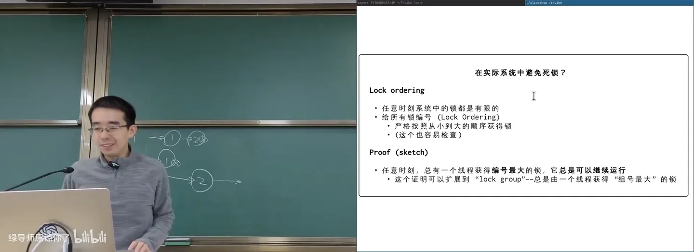
📷 Linux 内核源码中的锁顺序规则
回到原视频 (00:27:20)
3.2 为什么“按顺序上锁”依然难
内核文档指出：
- 新锁很难插进已有数千个锁的层级；
- 锁暴露给太多模块时，顺序约束非常脆弱；
- 最好的锁应当被封装，只在自己文件内使用；
- 持锁时不要调用不熟悉的复杂函数。
flowchart TD
A["新增一个锁"] --> B["它应插在哪个层级？"]
B --> C["调用者是否已知？"]
C --> D["跨模块是否暴露？"]
D --> E["持锁后是否调用外部代码？"]
E --> F["Lock Ordering 难以全局维护"]
3.3 文档常常与实现不一致
实证研究发现，只有约 53% 有文档锁规则的变量，在所有访问点都真正遵守了规则。
原因：
- 程序员上下文有限；
- 修改代码后忘记同步注释；
- 锁规则散落在多个文件；
- 模块间接口不断演进。
flowchart LR
A["锁规则文档"] --> B["代码实现"]
B --> C{"仍然一致？"}
C -- "否" --> D["潜在死锁或数据竞争"]
C -- "是" --> E["暂时满足约束"]
F["代码继续演进"] --> B
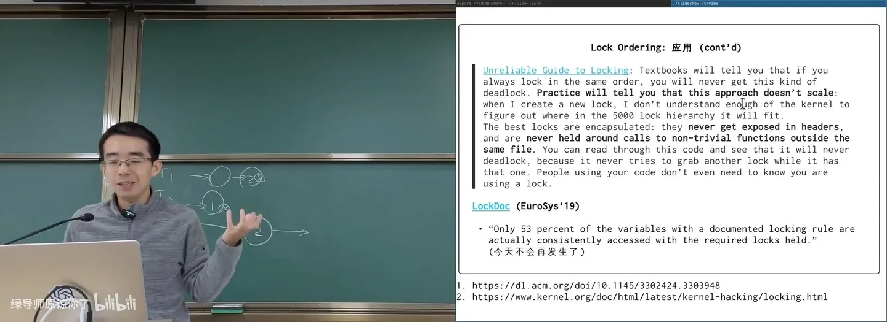
📷 锁规则文档与实现可能长期不一致
回到原视频 (00:29:00)
3.4 Harness Engineering
软件工程应当“做最坏的假设”：
- 假设程序员会忘了解锁；
- 假设罕见路径会写错；
- 假设旧文档已经过时；
- 假设测试无法覆盖全部交错；
- 假设 AI 也可能生成错误并发代码。
对策是工程约束、运行时检查与自动化审计。
flowchart TD
A["最坏假设"] --> B["RAII / 作用域锁"]
A --> C["统一 cleanup / goto release"]
A --> D["Lock Ordering"]
A --> E["Lockdep / 动态检查"]
A --> F["TSan / AddressSanitizer"]
B --> G["Harness Engineering"]
C --> G
D --> G
E --> G
F --> G
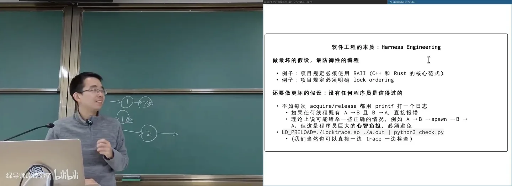
📷 Harness Engineering：不信任程序员，自动维持约束
回到原视频 (00:30:00)
3.5 RAII 与 goto cleanup
C++ / Rust 可以用作用域对象保证释放：
{
std::lock_guard<std::mutex> guard(lock);
/* leaving scope unlocks automatically */
}
C 中常见：
int f(void) {
Resource *r = acquire();
if (!r) {
goto cleanup;
}
if (operation_failed(r)) {
goto cleanup;
}
cleanup:
release(r);
return result;
}
flowchart TD
A["进入作用域"] --> B["构造锁对象 / 获取资源"]
B --> C["执行操作"]
C --> D{"正常还是错误返回？"}
D -- "都进入" --> E["析构 / cleanup"]
E --> F["释放锁与资源"]
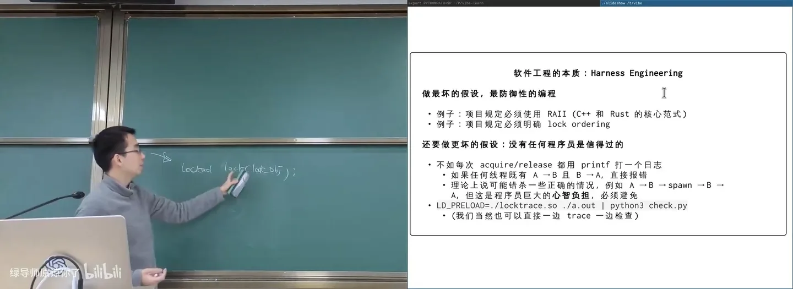
📷 通过 RAII 或统一 cleanup 防止漏解锁
回到原视频 (00:33:30)
4. Lockdep：用动态依赖图发现潜在死锁
4.1 记录锁依赖
每当一个线程已持有某些锁，再申请新锁时，记录有向边：
X → Y
表示存在“先拿 X，再拿 Y”的路径。
如果新增边让锁依赖图形成环，就报告潜在 ABBA 死锁。
flowchart TD
A["线程持有 A"] --> B["申请 B"]
B --> C["添加边 A → B"]
C --> D{"图中形成环？"}
D -- "是" --> E["报告潜在死锁"]
D -- "否" --> F["继续记录"]
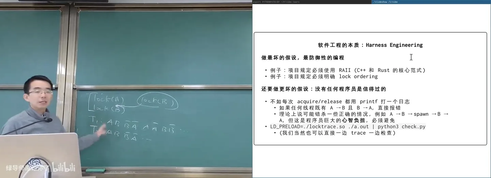
📷 Lockdep 建立锁依赖图并检查环
回到原视频 (00:37:00)
4.2 LD_PRELOAD 拦截
可以通过 LD_PRELOAD 覆盖：
pthread_mutex_lock
pthread_mutex_unlock
记录调用并更新依赖图：
LD_PRELOAD=./locktrace.so ./a.out
flowchart LR
A["目标程序调用 pthread_mutex_lock"] --> B["LD_PRELOAD hook"]
B --> C["记录已持有锁"]
C --> D["添加依赖边"]
D --> E["检查图是否成环"]
E --> F["继续调用真实 lock"]
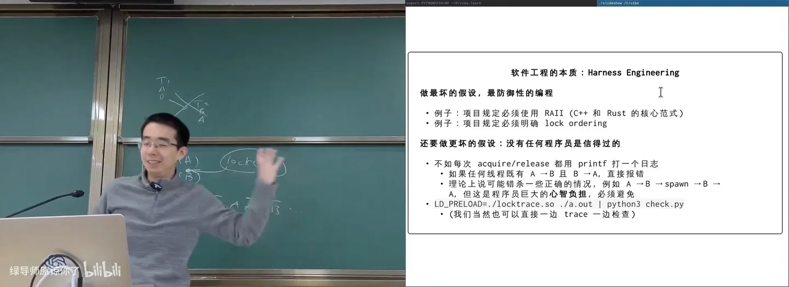
📷 通过 `LD_PRELOAD` 拦截锁 API
回到原视频 (00:38:20)
4.3 罕见路径也能被发现
传统压力测试可能运行百万次仍未触发死锁，因为某条锁顺序只在极罕见路径出现。
Lockdep 关注的是“锁顺序关系”，而不是必须真的发生阻塞。因此可以更早报告潜在环。
flowchart TD
A["罕见路径先 B 后 A"] --> B["程序本身未必立即死锁"]
B --> C["Lockdep 看到 BA 与已有 AB 冲突"]
C --> D["提前报告潜在死锁"]
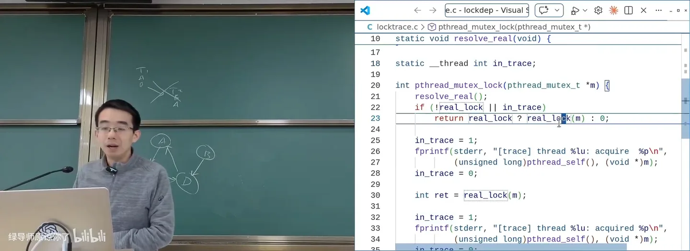
📷 Lockdep 在真正死锁前报告潜在 ABBA
回到原视频 (00:40:00)
5. 数据竞争
5.1 定义
数据竞争指：
两个不同线程访问同一内存位置，至少一个访问是写，而且两个访问之间没有 happens-before 关系。
flowchart TD
A["两个线程"] --> B["同一内存"]
B --> C{"至少一个是写？"}
C -- "否" --> D["只读，没有数据竞争"]
C -- "是" --> E{"存在 happens-before？"}
E -- "是" --> F["同步正确，无竞争"]
E -- "否" --> G["Data Race"]
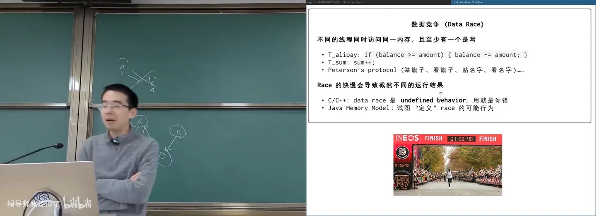
📷 数据竞争的定义：并发访问、同一位置、至少一个写
回到原视频 (00:42:50)
5.2 为什么至少需要一个写
两个纯读之间：
T1: read X
T2: read X
如果此前没有写，二者读到相同结果，不产生新状态。
加入写以后：
T1: write X
T2: read X
读取到新值还是旧值取决于线程速度，程序变得非确定。
sequenceDiagram
participant T1
participant X
participant T2
T1->>X: store 1
T2->>X: load
Note over T2: 可能读到 0，也可能读到 1
5.3 C/C++ 中数据竞争是 undefined behavior
这不是“结果不确定”这么简单。
在 C/C++ 中，发生 data race 的程序整体进入 undefined behavior：
- 编译器优化不再有义务保持预期语义；
- 内存可能损坏；
- 控制流可能被劫持；
- 安全边界可能被突破；
- 理论上可产生任意后果。
Java 等语言尝试通过内存模型给竞争行为定义最低保证。
flowchart LR
A["C/C++ Data Race"] --> B["Undefined Behavior"]
B --> C["编译器自由优化"]
B --> D["内存损坏"]
B --> E["控制流劫持"]
B --> F["安全漏洞"]
📷 C/C++ 数据竞争属于 undefined behavior
回到原视频 (00:45:00)
5.4 最常见的两种错误
上错锁：
T1: lock(A); sum++; unlock(A);
T2: lock(B); sum++; unlock(B);
漏上锁：
T1: lock(A); sum++; unlock(A);
T2: sum++;
flowchart TD
A["共享数据保护错误"] --> B["不同锁保护同一变量"]
A --> C["某条路径忘记加锁"]
B --> D["无共同 happens-before"]
C --> D
D --> E["Data Race"]
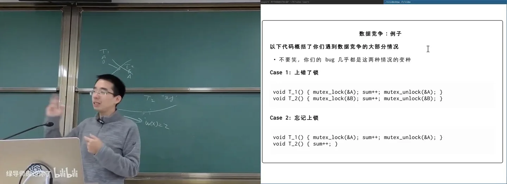
📷 最常见的两种数据竞争来源
回到原视频 (00:47:30)
5.5 数据竞争比看起来复杂
“内存”可以是：
- 全局变量；
- 堆对象；
- 栈；
- 内核结构；
- 库函数内部状态。
“访问”可能发生在：
- 自己写的 C 代码；
- 汇编；
- 库函数；
- 操作系统；
- 一条
ret指令间接访问的栈。
课程曾出现一个经典栈竞争：线程已被调度到另一个 CPU，但原 CPU 仍借用它的栈执行中断返回，导致两个 CPU 同时访问同一栈。
该问题最终推动了 Read-Copy-Update（RCU）相关思路的发展。
flowchart TD
A["线程迁移到 CPU 2"] --> B["线程可在 CPU 2 使用栈"]
C["CPU 1 仍执行中断返回"] --> D["CPU 1 借用同一线程栈"]
B --> E["同一栈发生并发访问"]
D --> E
E --> F["神秘重启 / 数据竞争"]
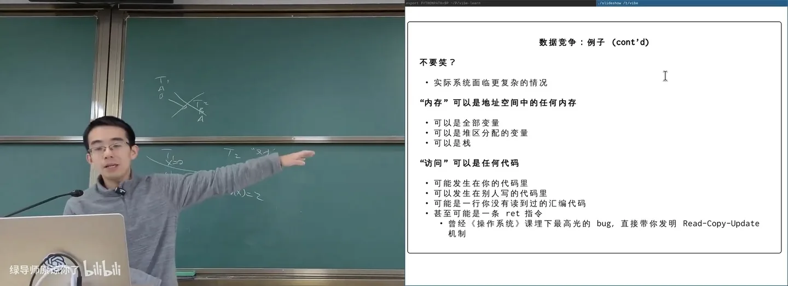
📷 线程栈与中断返回路径之间发生数据竞争
回到原视频 (00:50:00)
6. ThreadSanitizer：寻找 happens-before race
6.1 事件图
为了检测数据竞争，需要记录：
- 每个线程内部的程序顺序；
lock/unlock；- 每次读和写；
- 锁释放与下一次获取之间的同步关系。
如果两个访问：
- 访问同一内存；
- 属于不同线程；
- 至少一个是写；
- 在 happens-before 图中没有先后关系；
那么就是数据竞争。
flowchart TD
A["线程程序顺序"] --> D["Happens-before 图"]
B["unlock → 下一次 lock"] --> D
C["线程创建 / join"] --> D
D --> E["比较同地址读写事件"]
E --> F{"存在 HB 路径？"}
F -- "否" --> G["报告 Data Race"]
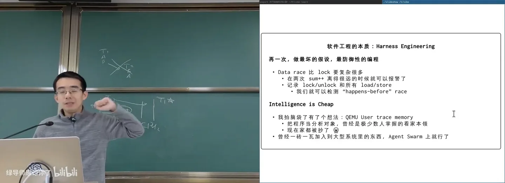
📷 TSan 通过事件顺序与同步关系检测竞争
回到原视频 (00:54:00)
6.2 只露出一条路径的竞争
示例：
if (rand() % 10 == 0) {
sum++; /* 未加锁 */
} else {
lock(&lk);
sum++;
unlock(&lk);
}
该错误只在十分之一概率出现，普通测试可能偶尔看到错误，也可能长期侥幸通过。
flowchart TD
A["运行 sum++ 路径"] --> B{"随机走哪条？"}
B -- "90%" --> C["正确加锁"]
B -- "10%" --> D["忘记加锁"]
C --> E["测试可能通过"]
D --> F["偶发数据竞争"]
E --> G["错误被隐藏"]
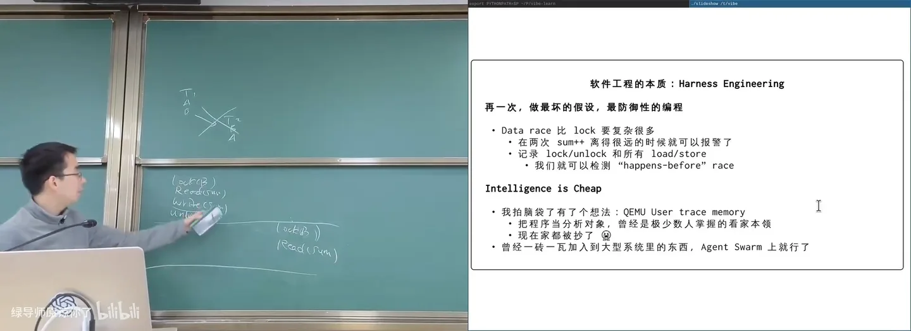
📷 隐蔽的数据竞争只在少数路径出现
回到原视频 (00:55:20)
6.3 使用 ThreadSanitizer
cc -fsanitize=thread -g race.c -o race
./race
TSan 会报告：
- 冲突的读写位置；
- 两个线程各自的调用栈；
- 是否存在同步边；
- 冲突发生在哪一行源码。
flowchart LR
A["编译时插桩"] --> B["记录读写与同步"]
B --> C["运行程序"]
C --> D["建立 happens-before 关系"]
D --> E["发现无同步并发访问"]
E --> F["打印竞争报告"]
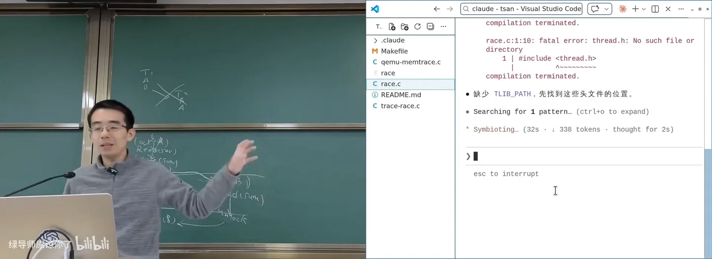
📷 ThreadSanitizer 报告具体的数据竞争位置
回到原视频 (00:57:40)
6.4 TSan 也不是万能
- 仅覆盖实际执行到的路径；
- 某些平台或运行时支持有限；
- 可能产生误报或漏报；
- 报告竞争并不等于已经发生错误结果；
- 没有报告也不代表程序正确。
flowchart TD
A["TSan 运行"] --> B["覆盖本次执行路径"]
B --> C{"触发竞争路径？"}
C -- "是" --> D["通常可检测"]
C -- "否" --> E["本次无报告"]
E --> F["不代表程序没有竞争"]
7. Therac-25：会致命的并发 Bug
7.1 事故背景
Therac-25 是放射治疗设备。1985–1987 年间，其事件驱动并发 Bug 导致至少 6 人死亡。
设备有两种模式：
- Electron 低能量模式；
- X-ray 高能量模式。
高能量模式需要 beam flattener 机械装置移动到指定位置，以控制辐射剂量。
flowchart LR
A["Electron 低能量"] --> C["治疗控制系统"]
B["X-ray 高能量"] --> C
C --> D["Beam Flattener"]
D --> E["患者"]
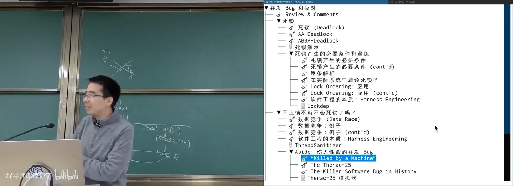
📷 Therac-25 模式与 Beam Flattener 控制
回到原视频 (01:02:40)
7.2 并发事件交错
危险顺序：
- 操作员选择 X-ray 高能量模式；
- 软件启动 beam flattener 移动，但机械动作需要数秒；
- 操作员迅速切回 Electron 低能量模式；
- 再快速切回 X-ray 高能量模式；
- 软件中的模式变量已经是高能量；
- 但机械装置仍未处在正确位置；
- 系统产生 Malfunction 54 错误；
- 操作员习惯性按 Continue；
- 高能电子束在缺少过滤装置时照射患者。
sequenceDiagram
participant O as Operator
participant S as Software
participant M as Mechanical Flattener
O->>S: select X-Ray High
S->>M: start moving flattener
O->>S: switch Electron Low
O->>S: switch X-ray High
Note over M: flattener 还未到位
S->>O: Malfunction 54
O->>S: Continue
S->>M: beam on
Note over M: 错误剂量照射
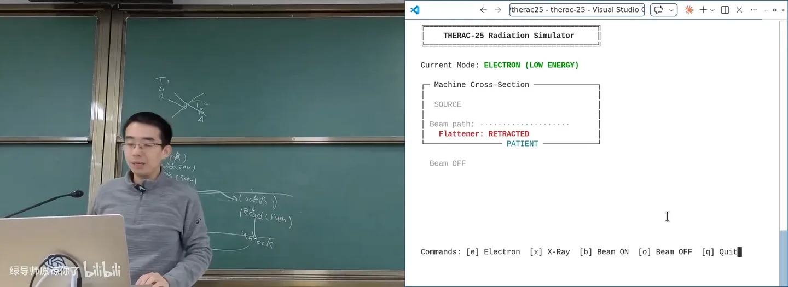
📷 Therac-25 的异步机械动作与模式事件交错
回到原视频 (01:05:30)
7.3 软件状态没有完整描述物理状态
软件中有“模式”和“flattener 状态”变量，但没有完整描述：
- 硬件当前移动到哪里；
- 移动是否已经完成；
- 下一步开启射线时装置是否确实到位；
- 操作员 Continue 是否安全。
软件是现实过程的投影，而投影是有损的。忽略物理状态和异步延迟就会产生原子性违反。
flowchart TD
A["真实物理状态"] --> B["软件变量投影"]
B --> C["模式 = X-ray"]
B --> D["Flattener 状态 = moving"]
C --> E{"是否强制等待动作完成？"}
D --> E
E -- "否" --> F["错误允许 beam on"]
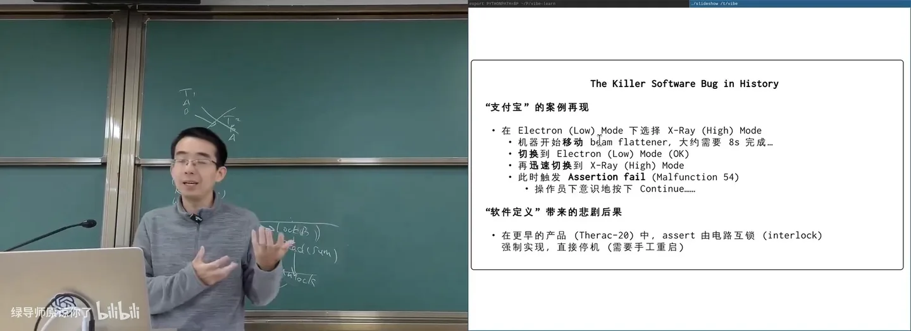
📷 软件没有完整建模异步机械状态
回到原视频 (01:07:20)
7.4 旧产品为何安全
Therac-20 用硬件互锁电路强制禁止危险组合：
assert not (X-ray High && Flattener Off)
若危险组合出现，机器直接停机，必须人工重启。
Therac-25 把安全检查移到软件中，但错误只产生警告，操作员可以 Continue，安全边界因此失效。
flowchart LR
A["Therac-20 硬件互锁"] --> B["危险组合直接停机"]
C["Therac-25 软件检查"] --> D["产生错误"]
D --> E["操作员可以 Continue"]
E --> F["危险组合被执行"]
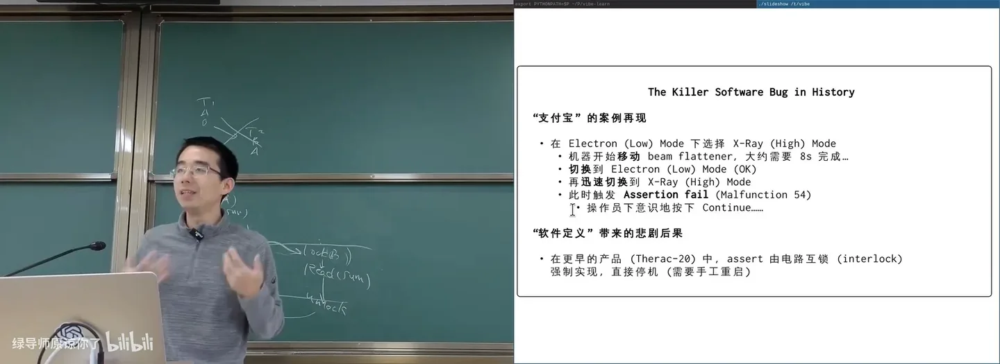
📷 硬件互锁与软件警告之间的安全差异
回到原视频 (01:08:20)
8. 原子性违反与顺序违反
8.1 即使每个内存访问都加锁也不够
一个更高层的逻辑块可能需要整体原子性：
lock(A);
sum++;
unlock(A);
lock(A);
sum++;
unlock(A);
如果别的线程希望观察到 sum 永远为偶数，这两个单独的锁区间仍可能被插入，形成：
本应原子完成的一段逻辑，被拆开执行
sequenceDiagram
participant T1
participant S as sum
participant T2
T1->>S: sum++ (0→1)
T2->>T2: observe odd sum
T1->>S: sum++ (1→2)
Note over T2: T1 期望两步原子，但被观察者插入
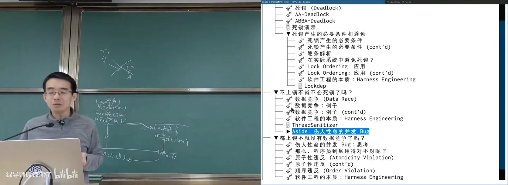
📷 多个正确上锁的区段仍可能违反整体原子性
回到原视频 (01:10:00)
8.2 原子性违反（AV）
模式：
A B A
本应连续完成的 A 被 B 插入。
例子：
- check-then-act；
- 使用指针前检查空；
- 创建临时对象后再写回；
- 更新多个对象但未持有同一把锁。
flowchart LR
A["逻辑操作 A"] --> B["预期原子完成"]
C["另一线程 B"] --> D["插入 A 的两部分之间"]
D --> E["Atomicity Violation"]
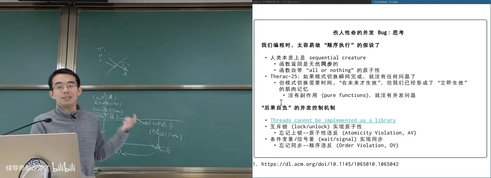
📷 Atomicity Violation：逻辑操作被插入
回到原视频 (01:11:50)
8.3 实证研究：97% 非死锁 bug 属于 AV 或 OV
2008 年 ASPLOS 论文 Learning from Mistakes 收集了 105 个真实并发 bug：
- MySQL；
- Apache；
- Mozilla；
- OpenOffice。
结论：97% 的非死锁并发 bug 可以归为：
- Atomicity Violation（AV）；
- Order Violation（OV）。
flowchart TD
A["105 个真实并发 Bug"] --> B["死锁"]
A --> C["非死锁"]
C --> D["97% 原子性或顺序问题"]
D --> E["Atomicity Violation"]
D --> F["Order Violation"]
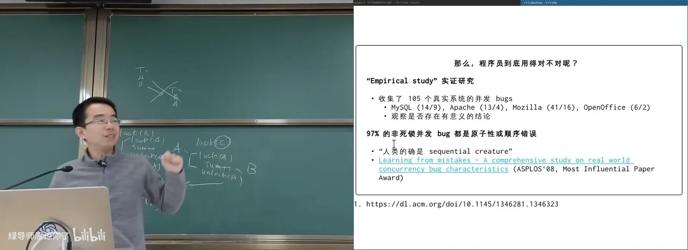
📷 实证研究：非死锁 bug 主要是 AV 与 OV
回到原视频 (01:15:00)
8.4 顺序违反（OV）
模式：
B A
但程序假设顺序应是 A B。
例子：
- 在初始化完成前使用对象；
free发生在最后一次使用之前；- 条件变量信号丢失；
- 线程创建后才建立其依赖状态；
- 并发 use-after-free。
sequenceDiagram
participant U as User Thread
participant F as Free Thread
U->>U: intend to access object
F->>F: free object
U->>F: use after free
Note over U,F: 顺序应为 use → free
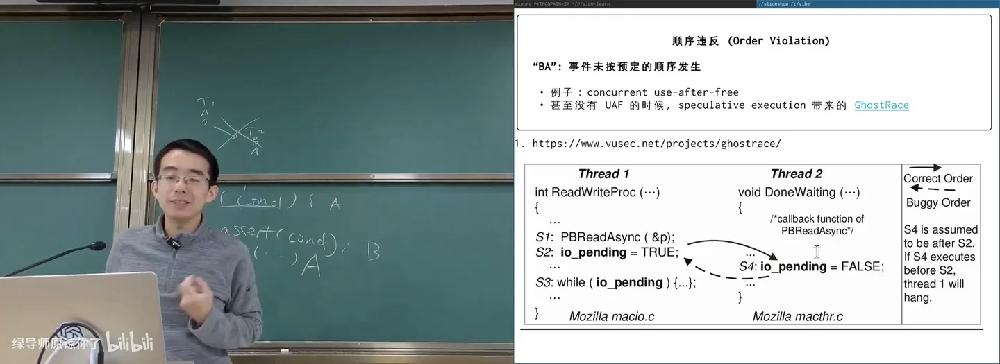
📷 Order Violation：free 与 use 顺序颠倒
回到原视频 (01:21:30)
9. TOCTTOU 与并发 use-after-free
9.1 检查时刻与使用时刻
TOCTTOU = Time-of-Check to Time-of-Use。
传统 sendmail 曾检查邮箱路径是否为符号链接，然后打开并写入：
- 检查路径是普通文件；
- 攻击者把路径替换为指向
/etc/passwd的符号链接； - 高权限程序打开并写入目标；
- 普通用户借高权限程序破坏系统文件。
sequenceDiagram
participant M as Mail Program
participant P as Path
participant A as Attacker
M->>P: check: is regular file?
P-->>M: yes
A->>P: replace with symlink to /etc/passwd
M->>P: open and write mailbox
Note over P: 实际写入敏感文件
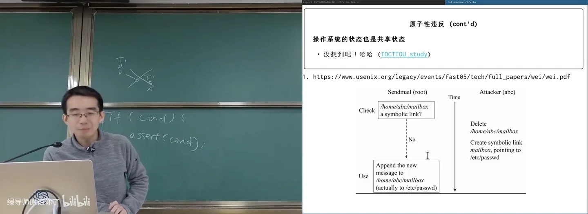
📷 TOCTTOU：检查与使用之间对象身份发生变化
回到原视频 (01:17:50)
9.2 为什么会成为并发 bug
这不是两个用户线程访问同一内存，而是：
- 检查时资源状态安全；
- 使用前资源状态变化；
- 操作者仍按旧判断继续执行；
- 系统对象发生了逻辑 ABA。
根本问题是“检查 + 使用”没有形成一个不可分割操作。
flowchart TD
A["check 条件成立"] --> B["时间窗口"]
B --> C["资源被修改"]
C --> D["use 仍按旧条件执行"]
D --> E["逻辑 ABA / 安全漏洞"]
9.3 并发 use-after-free
正确释放必须等待所有可能引用对象的线程结束访问。
user_thread: read object
free_thread: free object
若同步顺序错误：
free → later use
就产生并发 use-after-free。
flowchart TD
A["对象被多个线程引用"] --> B["一个线程决定 free"]
B --> C{"所有 reader 都结束？"}
C -- "否" --> D["其他线程 later use"]
D --> E["Use-After-Free"]
C -- "是" --> F["安全释放"]
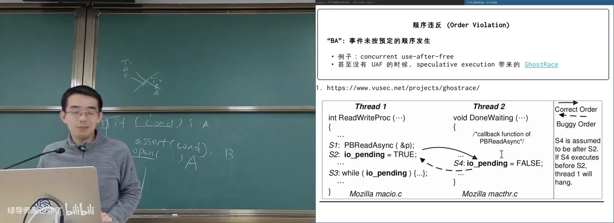
📷 并发 use-after-free 是典型顺序违反
回到原视频 (01:22:10)
9.4 GhostRace：投机执行中的竞争
即使程序逻辑中没有实际的 use-after-free，CPU 也可能投机执行“锁尚未获得”的路径：
- 分支预测错误；
- 投机读取；
- 留下 cache footprint；
- 通过侧信道泄漏信息。
这就是 GhostRace 一类问题的基础。
flowchart TD
A["自旋锁等待"] --> B["分支预测选择未来路径"]
B --> C["投机读取指针"]
C --> D["投机访问对象"]
D --> E["留下缓存副作用"]
E --> F["侧信道观察"]
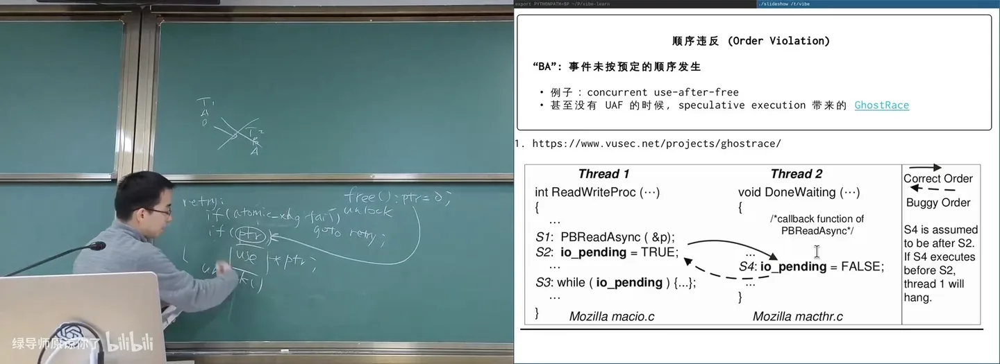
📷 投机执行使锁互斥在微架构层出现新问题
回到原视频 (01:23:50)
10. Harness Engineering：用系统性工具驾驭并发复杂性
10.1 做最坏的假设
软件工程的根本策略不是相信程序员，而是假定所有人都会犯错：
- 锁定资源必须成对获取和释放；
- 所有共享访问必须满足统一锁规则；
- 锁顺序必须全局一致；
- 检查和使用必须由同一同步协议保护；
- 罕见的异步路径也必须纳入分析。
flowchart TD
A["假设代码一定存在错误"] --> B["静态规则"]
A --> C["运行时拦截"]
A --> D["动态分析"]
A --> E["自动审计"]
B --> F["减少并发 Bug"]
C --> F
D --> F
E --> F
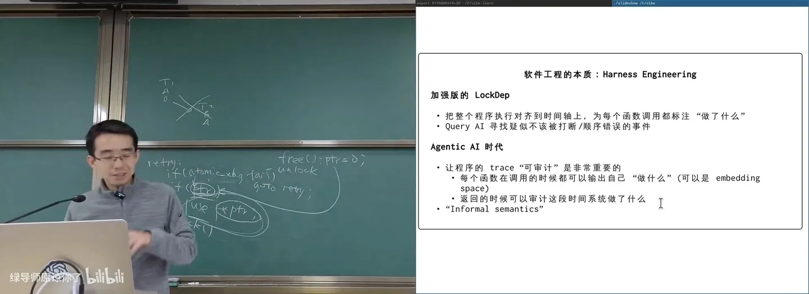
📷 Harness Engineering：系统性限制并检测错误
回到原视频 (01:25:30)
10.2 时间轴与可审计 Trace
可以把程序执行对齐到全局时间轴：
- 每条指令；
- 每次 lock / unlock；
- 每次内存读写；
- 每次函数调用；
- 每个线程的阻塞与唤醒。
如果每个函数还能报告它“做了什么”的语义，就得到更高级的 informal semantics：
function begin: acquire object
function end: release object
AI 可以在此基础上检查：
- 原子区间是否被插入；
- 顺序是否错误；
- 资源是否释放过早；
- TOCTTOU 窗口是否存在。
flowchart LR
A["指令与锁事件"] --> B["统一时间轴"]
C["函数 informal semantics"] --> B
B --> D["AI 审计"]
D --> E["发现 AV / OV / TOCTTOU"]
E --> F["修复或拦截"]
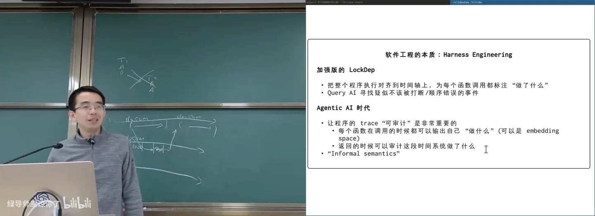
📷 把并发执行对齐到时间轴并交给 AI 审计
回到原视频 (01:27:30)
11. 总结：并发 bug 是顺序直觉与真实并发的碰撞
这一讲把真实并发错误归纳为清晰的类别：
- 人类是顺序生物，容易把并发程序误当作顺序程序；
- AA 死锁：同一线程重复持有不可重入锁；
- ABBA 死锁：多把锁形成循环等待；
- 死锁四条件：Mutual Exclusion、Wait-For、No Preemption、Circular Chain；
- 打破互斥、等待和不可抢占通常需要消息系统或事务内存；
- Lock Ordering 是最实用的工程方案；
- 即使顺序规则存在，文档和实现也可能长期不一致；
- RAII、统一 cleanup 和 Lockdep 可以降低锁错误；
- 数据竞争指无 happens-before 的并发访问，且至少一个为写；
- C/C++ 数据竞争是 undefined behavior；
- 数据竞争可能发生在全局、堆、栈、库函数甚至返回指令；
- ThreadSanitizer 通过事件图和 happens-before 检测竞争；
- Therac-25 展示异步机械状态未被正确同步的致命后果；
- 非死锁并发 bug 中，绝大多数是 Atomicity Violation 或 Order Violation；
- TOCTTOU、并发 UAF 和 GhostRace 都体现检查、使用、投机与顺序之间的不一致；
- Harness Engineering 要求自动工具而不是信任人；
- AI 时代的重要方向，是生成可审计、带 informal semantics 的程序轨迹。
flowchart LR
A["顺序执行直觉"] --> B["死锁"]
A --> C["数据竞争"]
A --> D["原子性违反"]
A --> E["顺序违反"]
B --> F["Lock Ordering / Lockdep"]
C --> G["TSan / ASan"]
D --> H["统一同步域"]
E --> I["条件变量 / 生命周期协议"]
F --> J["Harness Engineering"]
G --> J
H --> J
I --> J
最终的安全策略不是“相信程序员会写对”，而是：
用类型系统、作用域资源、统一锁规则、动态检测和 AI 审计，把并发错误变成可以被提前发现、可以回滚、可以拦截的问题。
附：官方参考与延伸阅读
以下链接来自官方讲义第 17 讲及课堂内容：
- System Deadlocks, 1971
- 死锁演示
- Linux
mm/rmap.clock ordering - Unreliable Guide to Locking
- LockDoc, EuroSys 2019
- lockdep demo
- ThreadSanitizer demo
- Threads Cannot Be Implemented as a Library
- Learning from Mistakes, ASPLOS 2008
- TOCTTOU study
- GhostRace
- Therac-25 simulator
阅读材料：
- Operating Systems: Three Easy Pieces 第 32 章，Concurrency Bugs。
官方课程资料：
版权与署名：本讲课程材料由蒋炎岩（jyy）编写。课程讲义与幻灯片采用 Creative Commons BY-NC 4.0 许可；本电子书保留课程出处、作者署名与许可说明。
课程来源与版权说明
课程：2026 春季学期《操作系统原理》
讲师：蒋炎岩（jyy）
官方课程主页：https://jyywiki.cn/OS/2026/
官方讲义：https://jyywiki.cn/OS/2026/lect17.md
视频来源：Bilibili BV1Jg96BjE68
版权说明：课程讲义与幻灯片归蒋炎岩所有，采用 Creative Commons BY-NC 4.0 许可；本电子书是对课堂讲授的书面化重构，保留出处与许可说明。